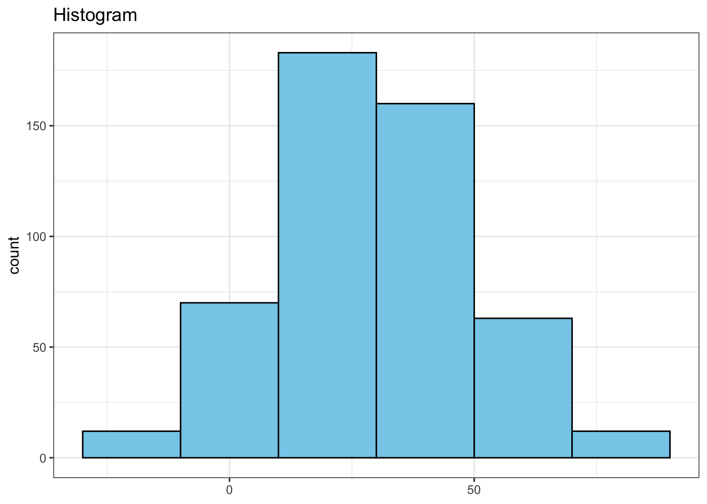
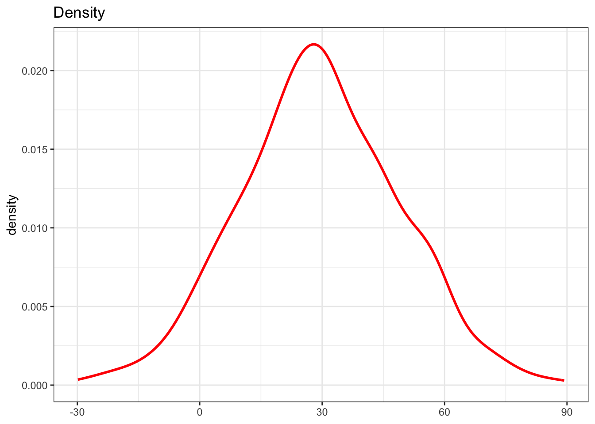
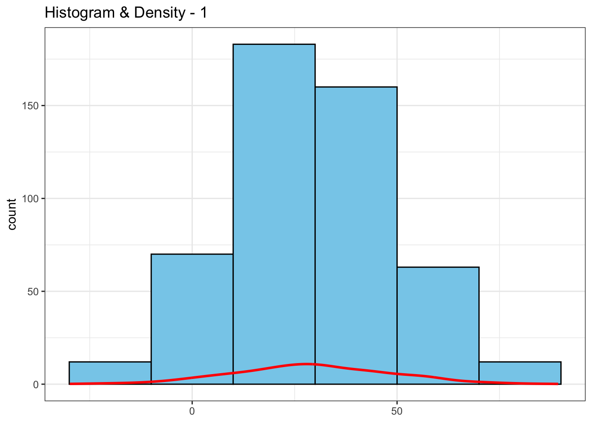
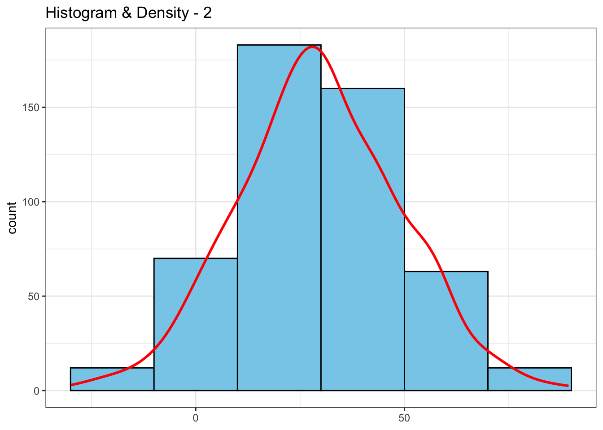
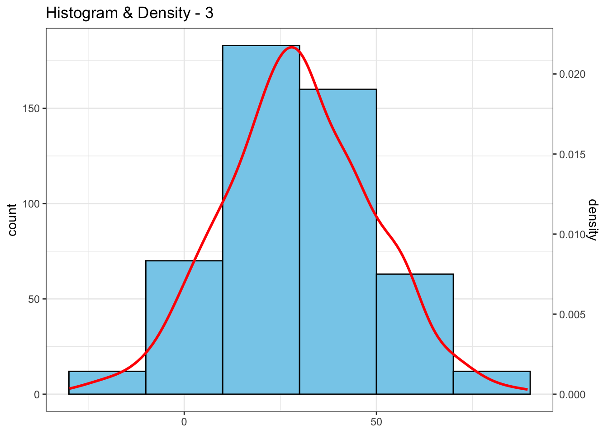

Visualization is fundamental in gaining insights and understanding the data, yet selecting an appropriate visualization method can often pose a challenge.
Today I explore combining a histogram (showing the frequency of values of the continuous data within specific intervals) and a density plot (illustrating probability distribution).
Let’s start by visualizing the distribution of data using a histogram.
n_bin = 20
df %>%
ggplot(aes(x = continuous_var, y = after_stat(count))) +
geom_histogram(binwidth = n_bin, fill = "skyblue", color = "black") +
labs(x = NULL, title = "Histogram")
Next, generate a density plot to illustrate the probability distribution of the data.
df %>%
ggplot(aes(x = continuous_var)) +
geom_density(color = "red", linewidth = 1) +
labs(x = NULL, title = "Density")
Now, let’s combine both graphs. Initially, there’s an issue as the histogram uses ‘count’ on the y-axis, while the density plot employs density distribution on the y-axis. Thus, resulting to below graph.
n_bin = 20
df %>%
ggplot(aes(x = continuous_var, y = after_stat(count))) +
geom_histogram(binwidth = n_bin, fill = "skyblue", color = "black") +
geom_density(color = "red", linewidth = 1) +
labs(x = NULL, title = "Histogram & Density - 1")
To address this, I’ll rescale the density values so that the curve matches the y-axis scale of the histogram.
n_bin = 20
max_hist_bin <- max(table(cut(df$continuous_var, breaks = seq(min(df$continuous_var), max(df$continuous_var), by = n_bin))))
max_density_y <- max(density(df$continuous_var)$y)
df %>%
ggplot(aes(x = continuous_var, y = after_stat(count))) +
geom_histogram(binwidth = n_bin, fill = "skyblue", color = "black") +
geom_density(aes(y = after_stat(density) * max_hist_bin / max_density_y), color = "red", linewidth = 1) +
labs(x = NULL, title = "Histogram & Density - 2")
Lastly I want to incorporate both count and density values. Thus, I add a secondary y-axis with the actual density values rather than the scaled values.
n_bin = 20
max_hist_bin <- max(table(cut(df$continuous_var, breaks = seq(min(df$continuous_var), max(df$continuous_var), by = n_bin))))
max_density_y <- max(density(df$continuous_var)$y)
df %>%
ggplot(aes(x = continuous_var, y = after_stat(count))) +
geom_histogram(binwidth = n_bin, fill = "skyblue", color = "black") +
geom_density(aes(y = after_stat(density) * max_hist_bin / max_density_y), color = "red", linewidth = 1) +
scale_y_continuous(sec.axis = sec_axis(~ . * max_density_y / max_hist_bin, name = "density")) +
labs(x = NULL, title = "Histogram & Density - 3")
This combination helps us to understand the frequency of values within specific intervals and to have a fuller picture of how the data is distributed, making analysis more insightful.